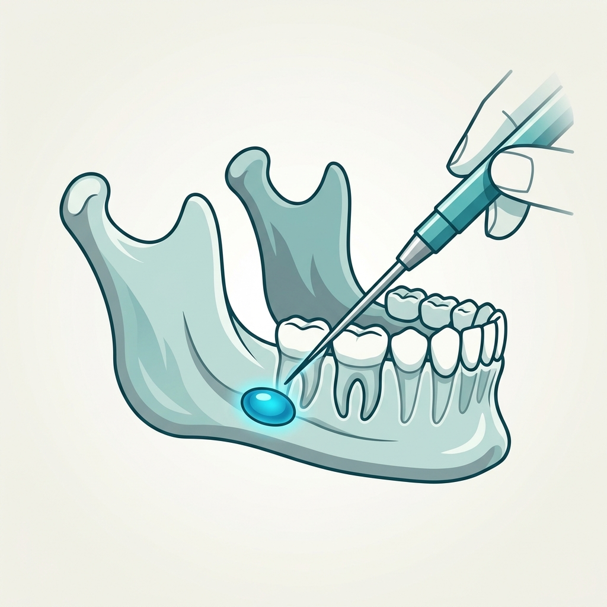

一、 認識 OKC 與生長機轉
醫師診斷的 OKC (Odontogenic Keratocyst，牙源性角化囊腫)，與一般普通囊腫有著本質上的不同：
1. 細胞源頭不同
它並非因發炎而被動積水脹大，而是源自牙齒發育時殘留的胚胎上皮組織（牙板殘餘 Dental Lamina），因基因調控而在多年後主動增殖。
2. 沿骨髓腔橫向蔓延
它非常隱蔽，生長時會沿著阻力最小的顎骨內部骨髓腔悄悄蔓延。這也是為什麼外觀看起來完好無損，內部骨骼卻可能已經大範圍受損的原因。
3. 角質化內容物
囊腫內部充滿了豆腐渣或起司狀的角質化物質（Keratin），這是其病理診斷的主要特徵。
臨床影像與手術示意

圖中展示下顎骨內部囊腫病灶（藍色標記），以及手術器械進行精密剜除打磨的概念示意。
二、 深入剖析 20-30% 高復發率的原因
OKC 在臨床上具有較高的復發機率，這與其解剖特徵緊密相關：
襯裡薄如蟬翼 (Fragile Lining)
OKC 的包膜（上皮襯裡）極薄，手術剝離時極易碎裂。一旦遺留微小的上皮細胞碎片，未來即可能原位重組復發。
衛星子囊腫 (Satellite Cysts)
主病灶周圍的骨髓腔中，常常散落著肉眼不可見的微小「附屬子囊腫」，如果沒有徹底清除，會成為復發的源頭。
發炎增加結構黏連 (Inflamed)
當囊腫伴隨發炎時，會與周圍骨壁、甚至鼻竇黏膜緊密黏連，大幅增加手術完整剝離的難度。
三、 現代臨床的「對抗手術策略」
為了將復發率壓低至個位數，臨床手術會採取極為徹底的步驟：
- 徹底剜除 (Enucleation)： 移除大範圍的主囊腫主體。
- 周邊骨壁打磨 (Peripheral Ostectomy)： 精細打磨貼近囊腫的周圍骨壁（約 1-2 mm），物理性摧毀潛伏於骨髓腔內的微小子囊腫。
- 骨缺損重建與補骨： 在骨壁穿孔或缺損處填入骨粉並覆蓋再生膜，促使健康骨骼生長，擠壓囊腫殘存空間。
💡 手術時間長（如 4 小時）代表醫師進行了極為細緻周密的骨壁磨除與清創，這是為您將未來復發機率降至最低的最佳保障！
四、 術後長期追蹤課表
面對 OKC，最有效的武器就是「定期追蹤」，及早發現，及早處理：
術後前 1 - 2 年
每 6 個月定期回診。拍攝全口環景 X 光片（Panoramic X-ray）或錐狀束電腦斷層（CBCT），觀察骨粉融合進度與骨密度。
術後第 3 - 5 年
進入穩定期，調整為每 1 年追蹤一次。可直接將此追蹤與每年半年的例行健保洗牙排在一起，輕鬆把關。
五、 萬一復發該如何再開刀？
許多患者擔心復發是否意味著再次進行長達數小時的全麻手術。事實上，復發時的應對手段往往更微創、更溫和：
| 治療武器 | 運作方式 | 優點與目的 |
|---|---|---|
| 微創剜除 + 骨創刮除 | 在局部麻醉下，針對早期發現的小點（如豆子大小）進行精準刮除打磨。 | 傷口極小，門診手術即可完成，能完整保留牙齒與周圍結構。 |
| 輔助藥劑 (化學燒灼) | 刮除後，於骨創表面塗抹特殊化學燒灼藥劑（如 modified Carnoy's solution）。 | 以化學方式摧毀肉眼不可見的微小殘留上皮，將原位復發率降至近乎零。 |
| 減壓造袋術 (Decompression) | 在骨頭上開一個原子筆芯大的微孔並放置減壓管，釋放囊腫內部壓力。 | 壓力釋放後，囊腫會隨時間自行縮小，顎骨隨之自行長回，避免再次手術的創傷。 |
核心心態：將其視為口腔的「慢性病」
在口腔外科醫師眼中，OKC 只要定期照 X 光監控，就不具備任何威脅。它生長極為緩慢，即使復發也多能在綠豆大時以門診微創方式挑除。手術順利清創後，不需焦慮，放鬆心情回歸日常生活，將定期回診當成例行洗牙般的小事即可。